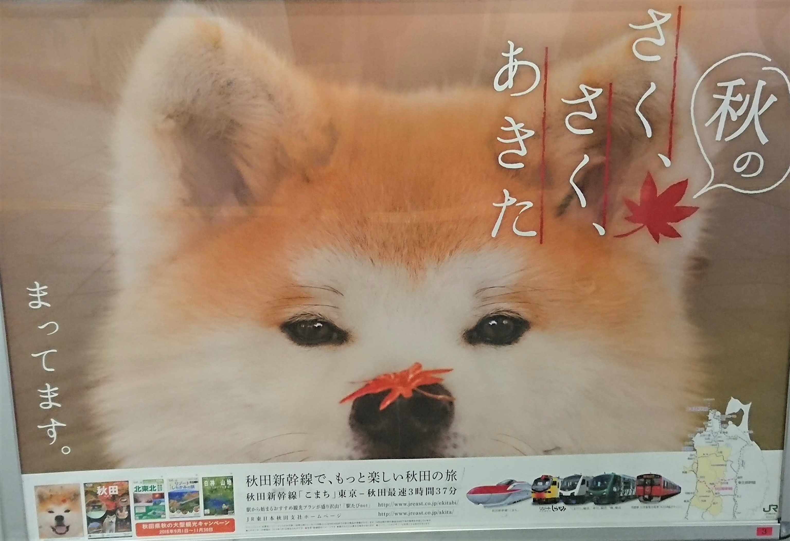
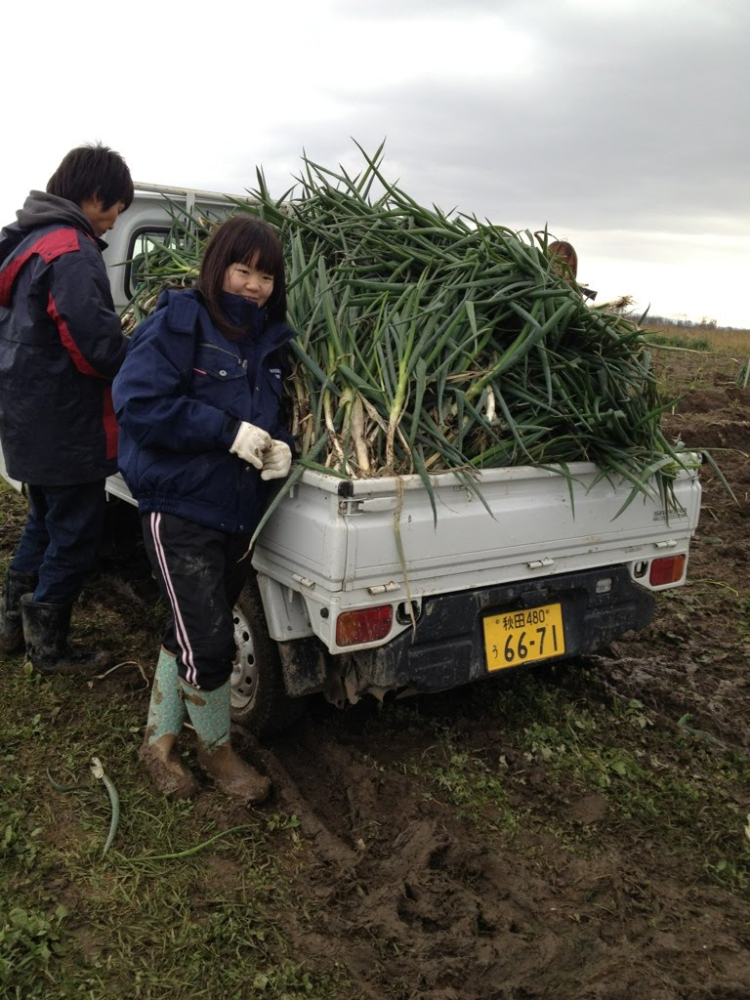
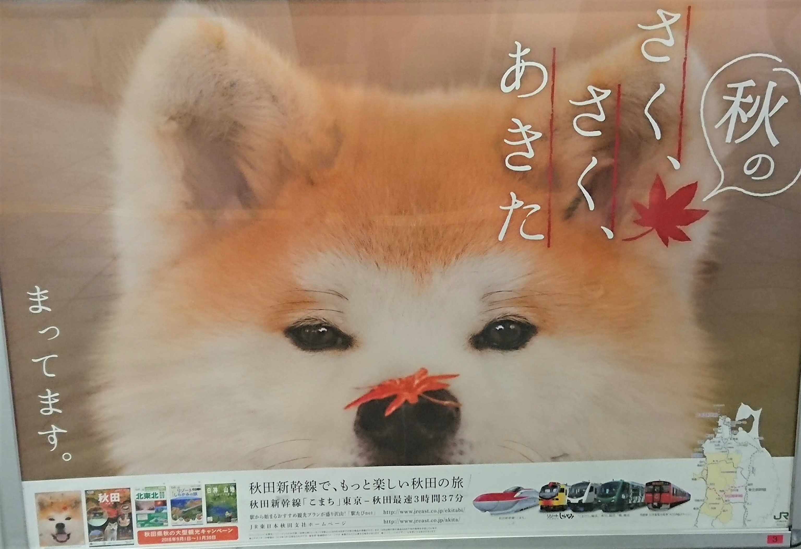
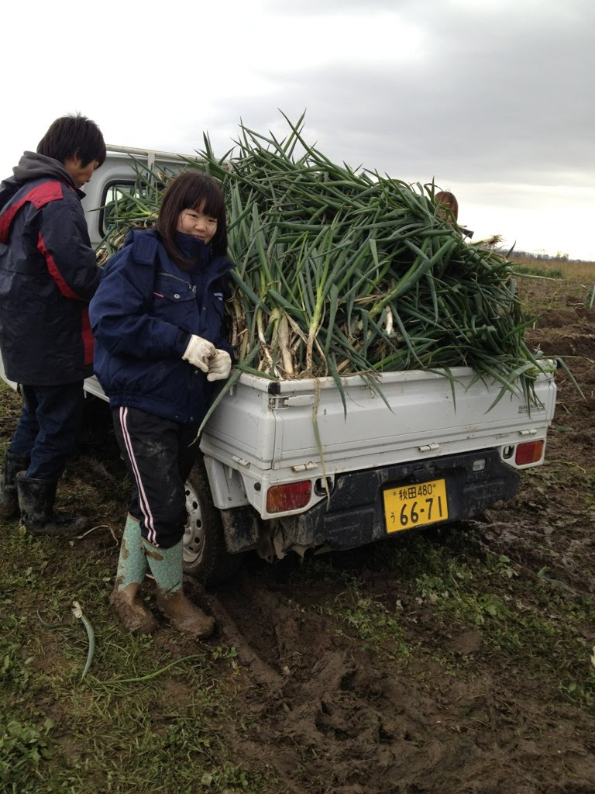

どんなところ？
東北地方の日本海側に位置する秋田県で、自然たっぷりの中で育ちました。秋田の良さといえば「食」「自然」が挙げられます。特に有名なものといえば「きりたんぽ」「あきたこまち」「稲庭うどん」があります。最近は「秋田犬」も注目されています。みなさん一度は聞いたことがあるのではないでしょうか？
 「食」について学ぶため地元の大学で農業を専攻しました。
東北地方の日本海側に位置する秋田県で、自然たっぷりの中で育ちました。秋田の良さといえば「食」「自然」が挙げられます。特に有名なものといえば「きりたんぽ」「あきたこまち」「稲庭うどん」があります。最近は「秋田犬」も注目されています。みなさん一度は聞いたことがあるのではないでしょうか？
 「食」について学ぶため地元の大学で農業を専攻しました。